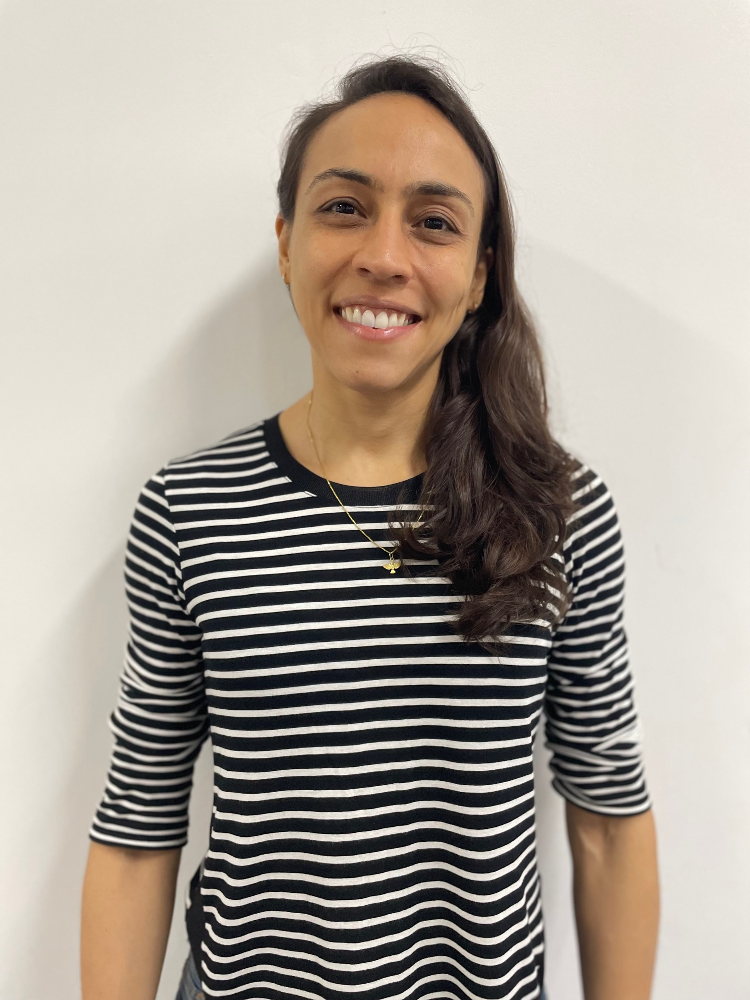

Nesta seção Simpósio, faremos uma breve resenha de eventos organizados por membros da comunidade do Departamento de Matemática (DMAT) do Instituto de Matemática e Estatística (IME) da Universidade Federal da Bahia (UFBA) durante o período julho de 2023 a fevereiro de 2024.
No dia 18 de julho, ocorreu a \(17^o\) Cerimônia de Premiação Regional Olimpíada Brasileira de Matemática das Escolas Públicas (OBMEP) - BA01. Na ocasião, foram homenageados os estudantes que obtiveram medalhas de ouro, prata e bronze na prova da OBMEP realizada em 2022. Durante a cerimônia, os estudantes tiveram a oportunidade de receber sua premiação e serem reconhecidos publicamente por seus resultados (Fig. 1).
A cerimônia contou com a presença do Magnífico Reitor da UFBA, Sr. Paulo Cesar Miguez de Oliveira, além de Secretários da Educação e representantes das Secretarias de Educação de Salvador, Camaçari, Madre de Deus, Vera Cruz e do Estado da Bahia. Integrando a mesa principal tivemos Erika Sholl, Coordenadora de Logística da OBMEP em todo o Brasil; Prof. Roberto Sant’Anna, Coordenador Regional da OBMEP; Prof. Kleyber Mota, Diretor do IME-UFBA; Prof.a Elaís Cidely, Coordenadora local do PICME-UFBA; e Prof.a Glória Fernandes, Coordenadora Estadual do PIC-Bahia (Fig. 2).
Durante a cerimônia, tivemos falas importantes não apenas sobre a importância do projeto e da premiação, mas também sobre o futuro dos medalhistas após a premiação, como as bolsas de estudos para participar de programas de iniciação científica.
Para mais informações sobre a OBMEP, acesse o site https://www.obmep.org.br/, e para informações sobre as atividades da OBMEP na Bahia, visite @dmatufba no Instagram/Facebook.
As Olimpíadas de Matemática estão estabelecidas na cultura escolar do Brasil. A OBMEP está desde 2005 fomentando a discussão científica e a descoberta de novos talentos, aumentando a cada ano o número de escolas e alunos participantes.
Já a Olimpíada Brasileira de Matemática (OBM), realizada pela Associação Olimpíada Brasileira de Matemática (AOBM), com apoio da UFBA, e voltada para alunos desde o 6º ano do Ensino Fundamental até o Ensino Médio, é a principal porta de entrada para competições internacionais. Uma das maneiras de participar da OBM é por meio das olimpíadas estaduais, em que a Olimpíada de Matemática do Estado da Bahia (OMEBA) apresenta sua cara.
Desde 2013, a OMEBA é realizada em uma parceria do DMAT e da AOBM. Devido à pandemia de COVID-19, as provas da OMEBA foram realizadas de forma virtual. A edição de 2024 marcou a volta de provas presenciais e contou com a presença de pelo menos 600 estudantes, em diversos polos de aplicação, na cidade de Salvador e no interior do estado.
Como em toda competição, os melhores participantes são premiados com medalhas e a Cerimônia de Premiação da OMEBA ocorreu no dia 30 de Novembro de 2023 no Salão Nobre da Reitoria da UFBA, em Salvador (Fig. 4). A ilustre cerimônia ocorreu com a presença dos professores Kleyber Mota da Cunha, representando o IME-UFBA; Darllan Conceição Pinto, representando o DMAT; Evandro Carlos Ferreira dos Santos, na ocasião representando a OMEBA; além da professora Vanessa Balbina da Silva Lopes Miguel, da Escola SESI Djalma Pessoa, e o professor Antônio Márcio de Lima Soares, do Instituto Federal da Bahia (IFBA) representando os professores das escolas participantes (Fig. 5). Quase uma centena de alunos e alunas foram homenageados com medalhas de bronze, prata e ouro, devido ao seu desempenho nos três níveis de competição.
Para mais informações da OMEBA, acesse https://www.omeba.ufba.br.
A Teoria das Tranças é um tópico recente de pesquisa da Topologia em Matemática, em que são estudados os grupos formados por suas classes de equivalência e várias generalizações destes grupos. Foi sediada na UFBA, entre os dias 10 e 13 de Julho de 2023, a conferência intitulada "Braid Theory and related aspects", a fim de promover a interação entre pesquisadores da área e áreas relacionadas (Fig. 6). Reuniram-se pesquisadores, docentes e discentes do Brasil, da França e da América Latina, para a apresentação de palestras e pôsteres durante os quatro dias de congresso.
A organização da conferência foi realizada pelos comitês científico e organizador compostos pelos professores: Alejandra Alderete (Universidade Federal do Oeste da Bahia), Carolina de Miranda e Pereiro (Universidade Federal do Espirito Santo), Daciberg Lima Gonçalves (Universidade de São Paulo), John Guaschi (Université de Caen), Neha Nanda (Université de Caen), Oscar Ocampo (Universidade Federal da Bahia), Paolo Bellingeri (Université de Caen) e Renato Diniz (Universidade Federal do Recôncavo da Bahia).
Para mais informações sobre o evento, acesse https://sites.google.com/view/braidtheory.
Às 16h40 do dia 24 de agosto de 2023, ocorreu a Cerimônia de lançamento da Revista de Matemática Hipátia, no Auditório do IME-UFBA. A Cerimônia teve duração aproximada de 1 hora e contou com a presença de professores e estudantes do IME-UFBA no local, bem como participantes externos interessados neste projeto, inclusive no formato virtual. À frente na mesa estiveram presentes os professores do DMAT: Samuel Feitosa e Vinícius Mello, membros representantes do Conselho Editorial da Revista; Darllan Pinto, Chefe do DMAT-UFBA; e Kleyber Mota, Diretor do IME-UFBA.
Na ocasião, houve a importante fala da professora Lindamir Casagrande (UTFPR), a qual fez uma bela explanação sobre a história de Hipátia, uma matemática contemporânea do século IV d.C. em Alexandria, com contribuições nas áreas de Aritmética, Geometria e Filosofia, e também símbolo inspirador desta revista (Fig. 7).
Além disso, foi apresentada a gravação de uma entrevista com a Prof.a Eliza Maria Silva, primeira baiana a obter Doutorado em Matemática, a qual não pôde estar presente na Cerimônia por razões de saúde. Eliza Maria foi estudante do IME-UFBA durante sua graduação, vindo a ser professora do mesmo anos depois. Um pouco de sua bela história é contada na primeira edição da Revista. O evento foi muito bem recebido pelo público que acompanhou, tanto de forma presencial quanto de forma virtual. (Fig. 8)
Antes do encerramento foram exibidos ao público alguns exemplares impressos da Revista, o que despertou ainda mais o interesse e curiosidade do público presente (Fig. 9). Ao final houve um coffee-break de encerramento.
Para mais informações sobre a Revista Hipátia, acesse http://www.dmat.ufba.br/extensao/revista-hipátia.
Os grupos de pesquisa em Sistemas Dinâmicos da UFBA e UFC tiveram o projeto de pesquisa aprovado na Chamada Universal do CNPq (CNPq/MCTI/FNDCT \(N^o\) 18/2021), conquistando financiamento para execução dos objetivos e ações propostas. A Chamada Universal é destinada a projetos de grupos emergentes e consolidados de qualquer área do conhecimento. Esse projeto tem fortalecido os vínculos com a Universidade Federal do Ceará (UFC), contribuindo na melhoria e formação de recursos humanos tanto na UFBA, quanto na UFC, e promovendo essa área de pesquisa na região Nordeste.
Esse financiamento tem permitido que o grupo de pesquisa da UFBA receba convidados nacionais e internacionais, e realize eventos, como a primeira edição do Workshop Nordestino de Sistemas Dinâmicos, que terá a sua segunda edição a ser realizada em setembro de 2024 na cidade de Fortaleza em conjunto com o Jangada Dinâmica.
Entre os anos 2020 e 2022, como consequência da pandemia, todas as atividades foram realizadas no formato virtual, aumentando o número de seminários acessíveis a nível mundial. Portanto, o seminário local teve uma interrupção e foi retomado em agosto de 2022, acontecendo regularmente em formato presencial com uma frequência quinzenal desde então. Temos recebido visitantes de diversas universidades a nível nacional e internacional, com mais de 19 palestras realizadas em um período de um ano e meio, nas mais diversas sub-áreas de pesquisa em Sistemas Dinâmicos (Fig. 10).

Durante esse último ano, o grupo de pesquisa em Sistemas Dinâmicos tem recebido as visitas longas de dois pós-doutorandos da UFC (projeto Jangada Dinâmica) e a visita por 5 meses de um aluno do programa de doutorado da Pontificia Universidad Católica de Valparaíso no Chile, contribuindo nas discussões e enriquecendo o seminário. Para mais informações sobre as atividades do grupo de Sistemas Dinâmicos da UFBA, acesse https://sites.google.com/view/dynamicalsystemsufba/.
Entre os dias 20 e 24 de novembro de 2023, foi realizado o VIII Encontro da Pós-graduação em Matemática da UFBA (EPGMAT) no Auditório Maria José “Zezé” de Oliveira no IME-UFBA (Fig. 11). A oitava edição foi realizada após uma longa pausa devido a pandemia, a última edição aconteceu em 2019.
O encontro acontece anualmente no segundo semestre de cada ano letivo, dirigido a docentes, pesquisadores e alunos de cursos de Mestrado e Doutorado em Matemática e Estatística, tanto da UFBA como de outras instituições de ensino superior no Brasil. Também estão aptos a participar os alunos de cursos de graduação. Palestras e minicursos são ministrados por docentes do Programa de Pós-Graduação em Matemática da UFBA e do Programa de Doutorado em Matemática UFBA/UFAL e convidados.
O objetivo principal do encontro é divulgar os trabalhos do corpo docente e discente dos dois programas e promover a interação entre os participantes, enriquecendo o ambiente de trabalho de ensino e pesquisa, contribuindo para a difusão da Matemática, Estatística e áreas afins.
Para mais informações sobre o Encontro da Pós-graduação em Matemática da UFBA, acesse https://encontropgmat.ufba.br/.
Aprender é muito mais interessante quando a gente se diverte e conhece coisas novas. Concorda?
Essa é uma das propostas do Ondjango Asili, um coletivo de estudantes de graduação da UFBA e professores de Matemática da Educação Básica, liderado pela Prof.a Simone Moraes do DMAT-UFBA (Fig. 12). O coletivo surgiu no projeto de extensão da UFBA, Jogos Africanos e Ensino de Matemática, também coordenado pela professora. Nas atividades do coletivo e do projeto de extensão a ideia de aprender associada ao conhecimento com diversão é colocada em prática, seja utilizando jogos africanos de diferentes categorias ou elementos culturais de África, como por exemplo a geometria sona ou os símbolos adinkras.

O coletivo Ondjango Asili tem trabalhado com a filosofia de criar um espaço de (re)união, conversa, discussão, troca e criação de atividades, tanto para proporcionar a afrodescendentes o conhecimento originário de África, como mostrar a importância de ensinar, conhecer e aprender utilizando jogos e aspectos da cultura africana, proporcionando atividades para o ensino de Matemática no contexto da lei 10.639/03, que podem ser adaptadas tornando-se também atividades interdisciplinares.
Em novembro de 2023, como parte das celebrações do Novembro Negro, o Ondjango Asili auxiliou a Superintendência de Relações Internacionais da UFBA na promoção da palestra “Extensão de corpos e teoria de Galois”, proferida pelo Prof. Massingacala Paulo Sebastião, da Université de Technologie de Compiégne. A atividade ocorreu no Auditório do IME-UFBA, no dia 17 às 15h, com a presença da superintendente Wlamyra Ribeiro Albuquerque. Após a palestra, houve uma roda de conversa com o Prof. Massingacala, estudantes de Matemática e docentes do DMAT, sobre os temas da palestra e sobre a representatividade de negros nas ciências exatas (Fig. 13).
Fechando a programação do Novembro Negro, no dia 24, foi a vez do Ondjango Asili apresentar um pouco do que vem se envolvendo, das 15h às 20h deste dia ocorreu a BLACK MATH FRIDAY (Fig. 14), o evento também contou com a participação dos estudantes matriculados na disciplina MATG12 ACCS: Cultura e Jogos Africanos no Ensino da Matemática. A BLACK MATH FRIDAY começou com uma palestra da Prof.a Simone, apresentando uma panorâmica do projeto, seguido de depoimentos de integrantes da equipe, falando um pouco das experiências vividas e as suas perspectivas futuras. Na sequência, houve uma sessão de pôsteres, com painéis colocados no saguão do IME, neles os estudantes bolsistas do projeto e da ACCS apresentaram trabalhos que elaboraram e aplicaram em escolas da Educação Básica de Salvador. O evento finalizou com um torneio de jogos africanos, com ampla participação de estudantes do curso de Matemática, foi uma oportunidade para conhecerem jogos de diferentes categorias e de vários países de África, além de garantir a diversão!
Acompanhe as atividades do Ondjango Asili acessando https://ondjangoasili.com/ ou pelo Instagram @odjango.asili, conheça o trabalho e divirta-se!
Em 2023, o curso de Licenciatura em Matemática da UFBA completou 80 anos! Para celebrar este marco tão importante, serão realizadas diversas ações comemorativas ao longo deste ano de 2024, com o intuito de resgatar e valorizar a história do curso, ressaltar a sua importância para a educação em Matemática no Brasil, além de promover discussões acerca das perspectivas futuras.
O evento de lançamento destas ações aconteceu no dia 14 de dezembro de 2023, com uma especial conversa sobre os primórdios do curso com a ex-aluna e ex-diretora do IME, a Prof.a Arlete Cerqueira Lima (Fig. 15). Graduada em Matemática pela antiga Faculdade de Filosofia, Ciências e Letras da UFBA, a Prof.a Arlete é considerada a primeira Mestra em Matemática da Bahia e, entre outras importantes contribuições durante os seus anos de estudo e trabalho na UFBA, participou diretamente do processo de fundação do Instituto de Matemática da UFBA, que mais tarde se transformou no Instituto de Matemática e Estatística da UFBA.
Atualmente, com 91 anos e uma memória de dar inveja aos jovens estudantes presentes na conversa, a professora falou sobre a sua formação como matemática e sobre os desafios enfrentados para a criação e consolidação do Curso de Matemática da UFBA como referência no Brasil.
Na ocasião, além do atual Diretor do IME, o Prof. Kleyber Mota, e de atuais estudantes e professores do DMAT, também estiveram presentes os professores aposentados do DMAT: Adelaide Mendonça, Benedito Helvio Ikeda, Isaac Costa Lázaro, José Fernandes e Vera Lúcia Wasconcellos, que também compartilharam depoimentos repletos de recordações de momentos importantes, emocionantes e engraçados relacionados ao nosso curso e departamento (Fig. 16).
Certamente, esta conversa foi uma oportunidade única para reviver histórias e reunir diferentes gerações do nosso curso de Matemática da UFBA, além de servir de inspiração e motivação à comunidade acadêmica para continuar avançando em direção a novas conquistas e realizações (Fig. 17).
Este evento foi organizado por uma comissão de professores e estudantes do DMAT, responsavél por realizar as ações comemorativas do octogésimo aniversário do curso de Licenciatura em Matemática da UFBA. Para acompanhar as outras ações que serão realizadas acesse @dmatufba no Instagram/Facebook.
Em setembro de 2023, a Pró-Reitoria de Pesquisa e Pós-Graduação (PRPPG) da UFBA lançou o “Edital 16/2023 - Prêmio UFBA de Tese, Dissertação Acadêmica e Trabalho de Conclusão de Programa Profissional ano 2021 e 2022”. Este edital teve como propósito reconhecer o mérito acadêmico e a contribuição para a sociedade brasileira por meio de trabalhos defendidos na pós-graduação da nossa instituição.
Foram recebidos 140 inscrições de excelentes trabalhos acadêmicos, submetidos pelos Programas de Pós-Graduação, pré-selecionados por meio de suas comissões de avaliação internas. Para avaliação externa, foram estabelecidas comissões julgadoras para nove áreas de conhecimento, além de uma comissão específica para Programas Profissionais. Os critérios usados para avaliar os trabalhos foram: (a) originalidade do trabalho; (b) relevância para o desenvolvimento científico, tecnológico, cultural e social; (c) qualidade e quantidade de publicações decorrentes do trabalho; (d) metodologia utilizada; (e) qualidade da redação; e (f) estrutura/organização do texto.
O nosso programa de Pós-graduação em Matemática foi agraciado com duas menções honrosas: Juan Carlos Arroyave Blanco (Dissertação 2021), orientado pelo prof. Tertuliano Franco; e Elivan Neri Lima (Dissertação 2022), orientado pela prof.a Cristina Lizana Araneda. Foi realizada uma cerimônia de premiação dos trabalhos (Fig. 18), celebrando o encerramento deste primeiro Prêmio UFBA de Tese, Dissertação Acadêmica e Trabalho de Conclusão de Programa Profissional, no Salão Nobre da Reitoria no dia 12 de dezembro de 2023.
Para mais informações sobre a Pró-Reitoria de Pesquisa e Pós-Graduação (PRPPG) acesse https://prppg.ufba.br/, ou sobre o Programa de Pós-graduação em Matemática acesse https://pgmat.ufba.br/.
L1.7cm
Cristina Lizana é venezuelana, com graduação e mestrado em Matemática pela Universidad de Los Andes-ULA (Venezuela), e doutorado em Matemática pelo IMPA (Brasil). Foi professora da ULA(2004-2017) e trabalha na UFBA desde 2018. Pesquisa na área de Sistemas Dinâmicos, atuando principalmente em Dinâmica Parcialmente Hiperbólica e mapas robustamente transitivos. Atualmente, é a coordenadora do Núcleo de Extensão do IME e vice-coordenadora do Mestrado em Matemática. O seu hobby é a fotografia e a estreita relação desta com a matemática.
L1.7cm 
Elaís Cidely é baiana, nascida na cidade de Macaúbas. Possui graduação e mestrado em matemática pela UFBA, doutorado em matemática pelo IMPA e, desde 2015, é professora do IME-UFBA. Sua área de pesquisa é Sistemas Dinâmicos, com ênfase em Teoria Ergódica. Atualmente, é coordenadora local do PICME-UFBA e vice-coordenadora institucional do PROFMAT-UFBA. Na adolescência, tocou bateria em uma banda do colégio. Durante o doutorado, tocou alfaia em um grupo carioca de maracatu. Mas desde 2021, tem o CrossFit como parte indispensável da sua rotina.
L1.7cm 
Henrique da Costa é mineiro, cursou graduação e pós-graduação no ICMC-USP em São Carlos, interior de São Paulo, e está na UFBA em Salvador desde 2016. Atua na área de pesquisa em análise, mais precisamente sistemas dinâmicos não-lineares e equações diferenciais parciais. Estuda piano e jogos de cartas e tabuleiro como hobby. Foi cabeludo durante a pandemia, no entanto não se atreveu a ser padeiro.
L1.7cm 
Roberto Sant’Anna é nascido e criado em Salvador, Bahia. É doutor em Matemática Pura pela UFBA e atualmente é professor adjunto no Instituto de Matemática Estatística da UFBA e também Coordenador Regional da OBMEP. Tem realizado pesquisas na temática de Otimização Ergódica, dentro da área de Sistemas Dinâmicos e também tem atuado em diversos projetos tendo em vistas a divulgação da Matemática. Nas horas vagas, é amante da música e busca através dela se expressar por meio do teclado ou piano, instrumentos que tanto admira.